300 вопросов о цигун. Секреты китайской медицины. Содержание
Первое упражнение: "растягивание груди" (рис. 115, 116).
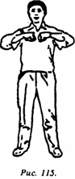
_____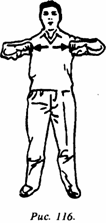
Стойка естественная; кисти полусжаты в кулаки, пространство между большим и указательным пальцами обращено вовнутрь, руки, согнутые в локтях, находятся на уровне груди в горизонтальном положении; руки синхронно разводятся в стороны без разгибания в локтях; затем вновь сводятся перед грудью (движение в стороны и возврат считаются за один раз). Выполняется 20 раз.
Показание: расширяет грудную клетку, улучшает работу легких и сердца.
Второе упражнение: "повороты плеч" (рис. 117, 118),
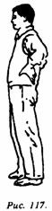
_____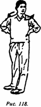
Естественная стойка, руки лежат на пояснице, пространство между большим и указательным пальцами обращено вниз, левое плечо двигается вперед, правое - назад, затем левое плечо двигается назад, а правое - вперед; попеременно выполняется 20 раз.
Показание: укрепляет селезенку, разгоняет кровь, улучшает работу печени, нормализует дыхание.
Третье упражнение: "подпирать небо одной рукой" (рис. 119).
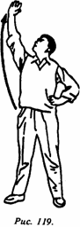
Естественная стойка, обе руки лежат на пояснице; по очереди их поднимают вверх, как бы что-то подпирая над собой, взгляд следует за внешней стороной кисти, поднимающейся вверх. Выполняется попеременно 20
Показание: гармонизирует функции селезенки и желудка, улучшает пищеварение.
Четвертое упражнение: "вращать телом, глядя на луну" (рис. 120).
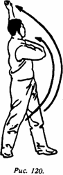
Естественная стойка, обе руки одновременно выполняют маховые движения влево и вверх, при этом верхняя часть корпуса разворачивается влево; левая рука движется выпрямленной, взгляд следует до самой высшей точки подъема пальцев левой руки. Затем обе руки одновременно совершают маховые движения вправо и вверх; верхняя часть корпуса разворачивается вправо, взгляд следует до самой верхней точки движений пальцев правой руки. По очереди делается по 20 маховых движений в каждую сторону
Показание: разрабатывает мышцы поясницы и спины предохраняет от заболеваний шейных позвонков.
Пятое упражнение: "обеими руками вращать колесо водяной мельницы" (рис. 121, 122).
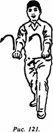
_____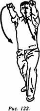
Одна нога выставлена вперед, вторая отставлена назад, упражнение выполняется в положении присев, как бы в исходной глубокой стойке бегуна. Вначале вперед выставляют левую ногу обе руки выпрямлены, направлены вперед и как бы удерживают рукоять колеса водяной мельницы. Надо вначале "рукоять водяной мельницы" вращать вперед, затем вниз, совершая кольцевое движение. Так делают 10 раз. Затем выставляют вперед правую ногу и выполняют такие же движения еще 10 раз.
Показание: активизирует мышцы груди и спины, а также суставы, способствует циркуляции ци и крови, устраняет боли.
Шестое упражнение: "разделять небо и землю" (рис. 123, 124).
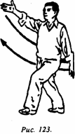
_____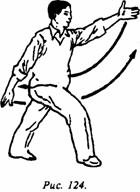
Выдвинутая вперед нога согнута в колене, отставленная назад - вытянута, как струна, принимается стойка лучника. Руки выполняют маховые движения вперед и назад, вверх и вниз; пальцы естественно раздвинуты. Когда впереди левая нога, то маховое движение вперед и вверх выполняется правой рукой, а когда правая - левой рукой. Попеременно обеими руками делается по 20 маховых движений.
Показание: разрабатывает сухожилия, активизирует каналы, способствует движению вниз ци и крови.
Седьмое упражнение: "разработка поясницы и бедер" (рис. 125).
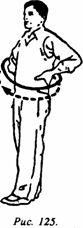
Ноги стоят ровно, чуть шире плеч, обе руки лежат на пояснице, выполняются вращательные движения поясницы и бедер (слева направо), как будто вращают мельничный жернов. Выполняют 20 раз, затем, не прерываясь, еще 20 раз в обратном направлении.
Показания: разрабатывает коллатерали бедер и поясницы, расслабляет мышцы поясницы и живота, устраняет боли и ломоту в пояснице.
Восьмое упражнение: "вращение коленями" (рис. 126).
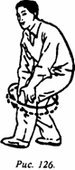
Согнуть ноги в коленях, полуприсев. Ладонями обеих рук обхватить коленную чашечку одной ноги, выдвинутой вперед на полшага. Вначале вперед выставляется левая нога. Колени начинают круговые вращательные движения слева направо. Всего 20 кругов. Затем аналогичным образом выполняются 20 вращательных движений в противоположном направлении.
Показание: разрабатывает каналы коленных суставов, предохраняет от ослабления нижних конечностей, от заболеваний ног.
Завершая разминку, вернуться в исходную позицию, сделать 20 шагов на месте и закончить комплекс.
300 вопросов о цигун. Секреты китайской медицины. Содержание